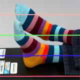
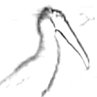
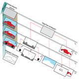
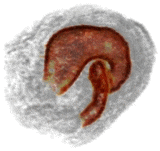
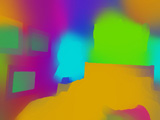

|
Tanuj Sur I'm a Data Scientist at Micron Technology in Hyderabad, India, where I work mostly on problems at the intersection of semiconductor industry and AI. I did my MSc. in Data Science from Chennai Mathematical Institute and my BSc. in Statistics from St. Xavier's College (Autonomous), Kolkata (under Calcutta University). |

|
ResearchI'm interested in computer vision problems related to egocentric vision, video understanding, 3D reconstruction and scene understanding. My research till now has been primarily in meta learning, incremental learning and data efficient learning. My research works have been highlighted below. |


|
Hyperbolic Uncertainty‑Aware Few‑Shot Incremental Point Cloud Segmentation
Tanuj Sur, Samrat Mukherjee, Kaizer Rahman, Dr. Subhasis Chaudhury, Dr. Biplab Banerjee Under review at WACV, 2025 In real-world applications, 3D point cloud recognition and segmentation are crucial for tasks such as scene understanding and motion planning in autonomous driving and robotics. Traditional segmentation methods often struggle to adapt to dynamic environments or novel categories with limited prior knowledge, necessitating the integration of few-shot learning and class incremental learning paradigms into 3D point cloud segmentation. While existing approaches exist for Few-Shot learning and Class Incremental learning for 3D point cloud segmentation, there remains a significant gap in the literature specifically addressing Few-Shot Class Incremental Learning (FSCIL) tailored for 3D point cloud segmentation. |

|
The Fast Bilateral Solver
Jonathan T. Barron, Ben Poole ECCV, 2016 (Oral Presentation, Best Paper Honorable Mention) arXiv / bibtex / video (they messed up my slides, use →) / keynote (or PDF) / code / depth super-res results / reviews Our solver smooths things better than other filters and faster than other optimization algorithms, and you can backprop through it. |
|


|
Geometric Calibration for Mobile, Stereo, Autofocus Cameras
Stephen DiVerdi, Jonathan T. Barron WACV, 2016 bibtex Standard techniques for stereo calibration don't work for cheap mobile cameras. |
|

|
Semantic Image Segmentation with Task-Specific Edge Detection Using CNNs and a Discriminatively Trained Domain Transform
CVPR, 2016 Liang-Chieh Chen, Jonathan T. Barron, George Papandreou, Kevin Murphy, Alan L. Yuille bibtex / project page / code By integrating an edge-aware filter into a convolutional neural network we can learn an edge-detector while improving semantic segmentation. |
|
|
Convolutional Color Constancy
Jonathan T. Barron ICCV, 2015 supplement / bibtex / video (or mp4) By framing white balance as a chroma localization task we can discriminatively learn a color constancy model that beats the state-of-the-art by 40%. |

|
Scene Intrinsics and Depth from a Single Image
Evan Shelhamer, Jonathan T. Barron, Trevor Darrell ICCV Workshop, 2015 bibtex The monocular depth estimates produced by fully convolutional networks can be used to inform intrinsic image estimation. |

|
Fast Bilateral-Space Stereo for Synthetic Defocus
Jonathan T. Barron, Andrew Adams, YiChang Shih, Carlos Hernández CVPR, 2015 (Oral Presentation) abstract / supplement / bibtex / talk / keynote (or PDF) By embedding a stereo optimization problem in "bilateral-space" we can very quickly solve for an edge-aware depth map, letting us render beautiful depth-of-field effects. This technology is used by the Google Camera "Lens Blur" feature. |
|  |
Multiscale Combinatorial Grouping for Image Segmentation and Object Proposal Generation
Jordi Pont-Tuset, Pablo Arbeláez, Jonathan T. Barron, Ferran Marqués, Jitendra Malik TPAMI, 2017 project page / bibtex / fast eigenvector code We produce state-of-the-art contours, regions and object candidates, and we compute normalized-cuts eigenvectors 20× faster. This paper subsumes our CVPR 2014 paper. |
|
Shape, Illumination, and Reflectance from Shading
We present SIRFS, which can estimate shape, chromatic illumination, reflectance, and shading from a single image of an masked object. This paper subsumes our CVPR 2011, CVPR 2012, and ECCV 2012 papers. |
|

|
Multiscale Combinatorial Grouping
Pablo Arbeláez, Jordi Pont-Tuset, Jonathan T. Barron, Ferran Marqués, Jitendra Malik CVPR, 2014 project page / bibtex This paper is subsumed by our journal paper. |
|


|
Volumetric Semantic Segmentation using Pyramid Context Features
Jonathan T. Barron, Pablo Arbeláez, Soile V. E. Keränen, Mark D. Biggin, David W. Knowles, Jitendra Malik ICCV, 2013 supplement / poster / bibtex / video 1 (or mp4) / video 2 (or mp4) / code & data We present a technique for efficient per-voxel linear classification, which enables accurate and fast semantic segmentation of volumetric Drosophila imagery. |

|
3D Self-Portraits
Hao Li, Etienne Vouga, Anton Gudym, Linjie Luo, Jonathan T. Barron, Gleb Gusev SIGGRAPH Asia, 2013 video / shapify.me / bibtex Our system allows users to create textured 3D models of themselves in arbitrary poses using only a single 3D sensor. |
 
|
Intrinsic Scene Properties from a Single RGB-D Image
Jonathan T. Barron, Jitendra Malik CVPR, 2013 (Oral Presentation) supplement / bibtex / talk / keynote (or powerpoint, PDF) / code & data By embedding mixtures of shapes & lights into a soft segmentation of an image, and by leveraging the output of the Kinect, we can extend SIRFS to scenes.
|

|
Boundary Cues for 3D Object Shape Recovery
Kevin Karsch, Zicheng Liao, Jason Rock, Jonathan T. Barron, Derek Hoiem CVPR, 2013 supplement / bibtex Boundary cues (like occlusions and folds) can be used for shape reconstruction, which improves object recognition for humans and computers. |
 |
Color Constancy, Intrinsic Images, and Shape Estimation
Jonathan T. Barron, Jitendra Malik ECCV, 2012 supplement / bibtex / poster / video This paper is subsumed by SIRFS. |


|
Shape, Albedo, and Illumination from a Single Image of an Unknown Object
Jonathan T. Barron, Jitendra Malik CVPR, 2012 supplement / bibtex / poster This paper is subsumed by SIRFS. |

|
A Category-Level 3-D Object Dataset: Putting the Kinect to Work
Allison Janoch, Sergey Karayev, Yangqing Jia, Jonathan T. Barron, Mario Fritz, Kate Saenko, Trevor Darrell ICCV 3DRR Workshop, 2011 bibtex / "smoothing" code We present a large RGB-D dataset of indoor scenes and investigate ways to improve object detection using depth information. |

|
High-Frequency Shape and Albedo from Shading using Natural Image Statistics
Jonathan T. Barron, Jitendra Malik CVPR, 2011 bibtex This paper is subsumed by SIRFS. |

|
Discovering Efficiency in Coarse-To-Fine Texture Classification
Jonathan T. Barron, Jitendra Malik Technical Report, 2010 bibtex A model and feature representation that allows for sub-linear coarse-to-fine semantic segmentation. |

|
Parallelizing Reinforcement Learning
Jonathan T. Barron, Dave Golland, Nicholas J. Hay Technical Report, 2009 bibtex Markov Decision Problems which lie in a low-dimensional latent space can be decomposed, allowing modified RL algorithms to run orders of magnitude faster in parallel. |

|
Blind Date: Using Proper Motions to Determine the Ages of Historical Images
Jonathan T. Barron, David W. Hogg, Dustin Lang, Sam Roweis The Astronomical Journal, 136, 2008 Using the relative motions of stars we can accurately estimate the date of origin of historical astronomical images. |

|
Cleaning the USNO-B Catalog Through Automatic Detection of Optical Artifacts
Jonathan T. Barron, Christopher Stumm, David W. Hogg, Dustin Lang, Sam Roweis The Astronomical Journal, 135, 2008 We use computer vision techniques to identify and remove diffraction spikes and reflection halos in the USNO-B Catalog. In use at Astrometry.net |

Miscellanea |